这一课问的全是频率，看起来是整本书里最容易的一课 —— 但恰恰是最容易答成 Usually. 两个字就结束的一课。真正要练的是两件事：把模糊的频率说具体（不是 often，而是 twice a week），以及用频率词的位置暴露语法水平（I usually take a nap 对，I take usually a nap 错）。另外第 18 题用的是 should，问的是「建议多久一次」，和第 1–17 题的「你实际多久一次」完全不是一回事。
先给频率 — 尽量用具体次数Twice a week, usually — Wednesday and Sunday.
说清是什么让它保持在这个频率There's a gym about five minutes from my building, so it's easy enough not to skip.
补一句反差 — 现在和以前、理想和现实It used to be five times a week when I was an undergraduate, and I was much nicer to be around.
「具体次数」永远比「副词」好。Often 是模糊的，twice a week 是可信的。哪怕你只是估算，也说出来：
Two or three times a week, I'd say.
后面加 I'd say 就表示这是估计，既准确又不用担责。
02频率的两套表达 + 一个位置规则
英语表达频率有两套系统：一套是副词（often、usually），一套是次数（twice a week、every other day）。会混着用，你的回答立刻有层次。
A · 八级频率阶梯：从现在开始记
强度
副词
大约频率
口语里的变体
100%
always
每次都
every single time / all the time
90%
almost always
几乎每次
nine times out of ten
80%
usually
通常
most days / most of the time
60%
often
经常
quite often / a lot
40%
sometimes
有时
now and then / once in a while
20%
occasionally
偶尔
every now and then
10%
rarely / seldom
很少
hardly ever / almost never
0%
never
从不
not once / never in my life
B · 具体次数：两套模板
模板
例子
注意
once / twice / three times + a week
twice a week / three times a month
a day / a week / a year 和 per day / per week 同义，前者更口语
every + 单数名词
every day / every week / every month
这里的名词必须是单数：every day，不是 every days
every other + 单数名词
every other day / every other week
「每隔一个」，即两天一次、两周一次
every few + 复数名词
every few days / every few months
「每隔几个」，这里的名词用复数
a couple of times + a week
a couple of times a week
「两三次」，比 twice 更随意，也好用
位置规则：频率副词在动词前，在 be 动词后。
这是这一课唯一真正的语法考点，也是说错最刺耳的地方。
✓ I usually take a nap.（在实义动词前）
✓ I'm usually tired after lunch.（在 be 动词后）
✗ I take usually a nap. / ✗ I usually am tired.
C · 第 18 题为什么特殊：should 不是习惯
前 17 题问的都是「你实际多久一次」，答案用一般现在时。但第 18 题问 How often should someone see a dentist? —— 问的是建议，不是事实。这时要用 should 或 you're supposed to 回答，不要说自己多久去一次。
问法
How often do you…?（你实际）→ How often should…?（建议）
回答
You should go at least once a year. / Every six months is what they recommend.
常见错误
答成 I go twice a year —— 那是回答第一类问题的。可以说，但必须先回应「建议」。
03课本例题：一个频率问题里的两难
例题问 How often do you visit your parents?。课本的答案没有停在「一个月一次」，而是把一个频率问题讲成了一个两难：想看父母，但工作忙；还要顾另一半的父母。这正是这一课最值得学的技巧 —— 用一句话给出频率，然后用整段解释这个频率为什么是这个数字。
Example
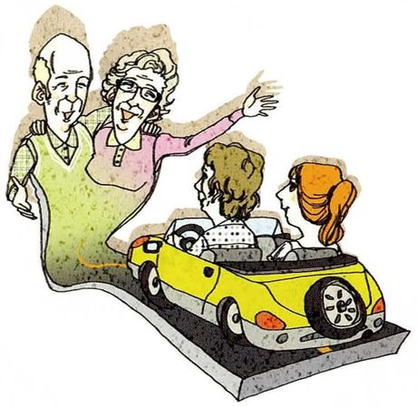
How often do you visit your parents? /vɪzɪt/
What you seeAn elderly man and woman standing and waving, the woman's arm up high, while a young couple drives away in a small yellow car. A goodbye, from the other side.
What it means你多久去看一次父母。How often + do you —— 问你实际的频率，不是理想频率。
Say it like this"I know that as my parents get older they want to see me more often — I can read it in their eyes. I'd like to visit as much as possible too, but my work keeps me busy. And I have to think about my parents-in-law as well, because they also want to see their own child regularly. So I have a dilemma. If my spouse and I alternate visits between both families, I see my own parents once a month at best. So I try to go on my own whenever I can make the time, and when I'm too busy, I call them often just to say hello."
这段里四个可以直接抄走的结构：
① I can read it in their eyes —— 「我从他们眼神里看得出来」，比 I know 有画面；
② So I have a dilemma —— 一句话说明这是两难，后面的解释就都成立了；
③ once a month at best —— at best「充其量」，把悲观说得客观；
④ alternate visits between both families —— alternate「轮流」，讲两个家庭时非常精准。
「我尽量多去看他们」别说 I try my best to see them as more as possible。
英语是 as often as possible（频率）或 as much as possible（程度）。
问频率就用 often：I visit them as often as I can.
这一课全在问频率，用 much 会显得答的不是同一件事。
04二十个问题：怎么答出层次
每张卡三段：What you see 照着图描述，What it means 说清这题问的是习惯还是建议，Say it like this 给三档答案：① 频率 / ② 频率 + 具体程度 / ③ 再加一个原因或反差。第三档请换成你自己的真事。
01
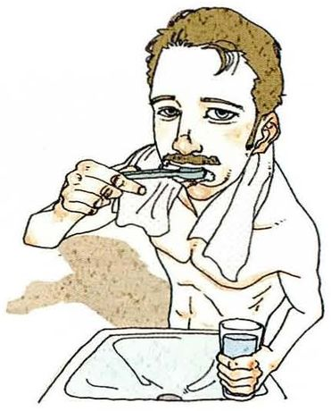
How often do you brush your teeth?
What you seeA man standing at a sink with a toothbrush in his mouth, a towel over his shoulder, a glass of water beside him. A morning routine.
What it means你多久刷一次牙。How often do —— 一般现在时问习惯。
Say it like this①Twice a day, morning and night. ②Twice a day normally. If I'm working late I sometimes skip the evening one, which I know is bad. ③Twice a day, and I've become slightly obsessive about it since my last dental check-up. The dentist said something about gums and I've been flossing every night for four months — which is longer than I've kept any other resolution.
02
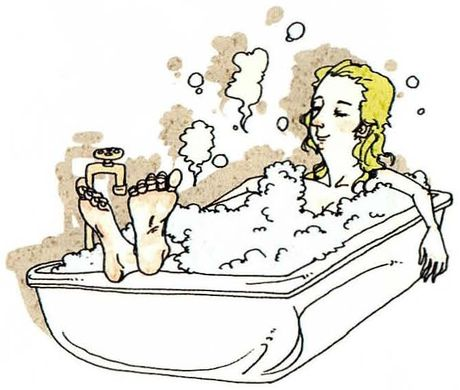
How often do you take a bath?
What you seeA woman lying back in a bathtub overflowing with bubbles, one foot up on the tap, eyes closed. Taking her time.
What it means你多久泡一次澡。注意 take a bath（盆浴）和 take a shower（淋浴）不同。
Say it like this①Almost never — I take showers. ②I shower every day, but a bath maybe twice a year. It's a winter thing, and only when I've got an evening free. ③Very rarely, and it's a shame. A bath takes forty minutes and I keep deciding I don't have forty minutes, which is ridiculous because I'll spend that long on my phone without noticing. So it's become a kind of test — if I take a bath, it means I've decided to have a good evening.
03
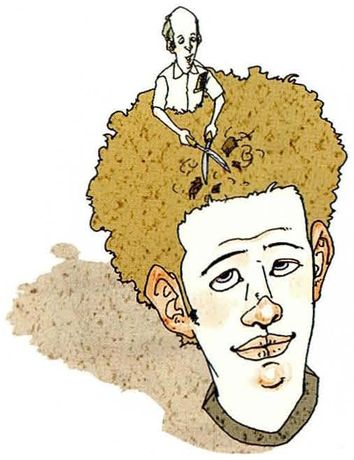
How often do you get your hair cut?
What you seeA giant face with curly brown hair, and a tiny barber standing on top of the hair with scissors raised. The job, literally above him.
What it means你多久理一次发。get your hair cut 是使役结构（get + 宾语 + 过去分词）。
Say it like this①About once every two months. ②Every six weeks or so. Any longer and it stops looking like a decision. ③I put it off for ages — usually three months, when it should be six weeks. The reason is entirely that I hate the conversation. Twenty minutes of small talk with someone holding scissors near my ears, and I never know what to say. I've tried going to the same barber so we run out of things to discuss, but then it's worse.
04
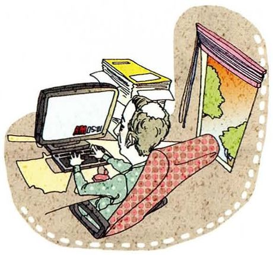
How often do you stay up all night?
What you seeA figure slumped at a desk in the dark, lit by a computer screen, papers and folders around them. The small hours.
What it means你多久通宵一次。课本脚注：stay up = 熬夜、不按平时时间睡。
Say it like this①Almost never now — I can't do it anymore. ②Maybe twice a year, always before a deadline. It used to be once a week as an undergraduate, which I now realise was just bad planning. ③Almost never, and not out of virtue. I worked out that staying up all night costs me the next two days, so it's a worse deal than simply working until midnight and getting up early. The one exception is the night before a submission, when I've stopped being rational and just want it finished.
05
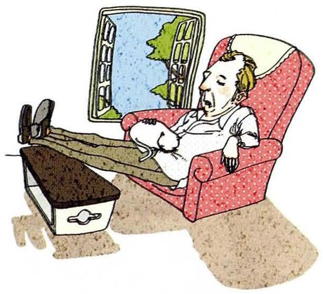
How often do you take a nap?
What you seeA man sprawled back in a red armchair, shoes off, feet up, head tilted, fast asleep in the afternoon with a window open behind him.
What it means你多久午睡一次。课本脚注：nap = 小睡，尤指白天。
Say it like this①Two or three times a week. ②Most days after lunch, for about twenty minutes. Any longer and I wake up worse than before. ③Almost every day, and it's the single best thing about my schedule. Twenty minutes at two o'clock and I get a second morning. The only problem is that it has to be exactly twenty — at forty I wake up in the middle of a dream and spend an hour confused about what year it is.
06
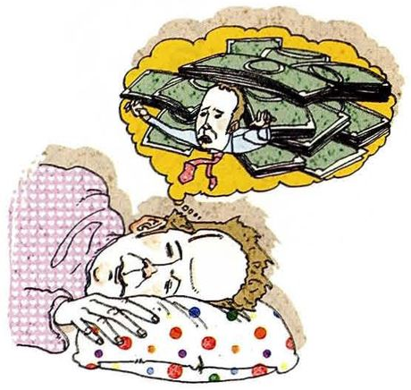
How often do you dream?
What you seeSomeone asleep under a spotted duvet, and above them a yellow thought bubble filled with money — a dream about money, presumably.
What it means你多久做梦一次。这题有个陷阱：人每晚都做梦，但只记得少数 —— 好的回答会点出这个区别。
Say it like this①Every night, technically — I just don't remember most of them. ②I dream every night, but I only remember maybe two a week. And they're never about anything interesting. ③The honest answer is that everybody dreams every night — what varies is whether you wake up in the middle of one. So I'd say I remember a dream about twice a week. What I find strange is that the boring ones stick: I once dreamed about buying printer paper and I can still picture it.
07
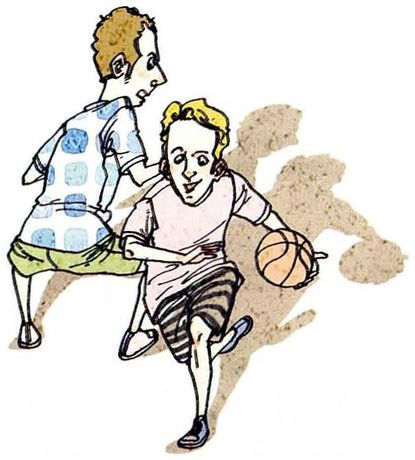
How often do you exercise?
What you seeTwo men on a court, one bent low dribbling a basketball past the other, who's reaching in. A weekly game, probably.
What it means你多久锻炼一次。exercise 这里是动词，不是名词。
Say it like this①Not enough — maybe twice a week. ②Twice a week if I'm honest, and one of those is usually walking to the lab. I keep meaning to do more. ③I'll say twice a week and then admit what counts: one proper session and one long walk. What I've actually found is that the exercise isn't the hard part — it's the changing clothes. If I'm already in sportswear when the thought arrives, I go. So I've stopped scheduling it and started keeping the kit by the door.
08
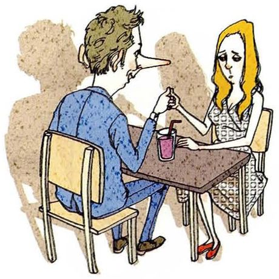
How often do you lie?
What you seeA man sitting at a small café table opposite a woman, his nose grown absurdly long and pointed. Pinocchio, on a date.
What it means你多久撒一次谎。这题不好答 —— 说「从不」不可信，说「经常」又不合适。技巧是区分谎言的类型。
Say it like this①Small ones every day, big ones never. ②I'd separate the two kinds. I tell small social lies constantly — "I'm fine", "that's a great idea". An actual lie about something that matters, maybe once a year. ③If you count polite ones, several times a day. If you mean saying something untrue to protect myself, very rarely — and I've noticed I'm bad at it, which is probably why. The interesting category is the ones I tell to avoid a conversation: "sorry, I didn't see your message". Those are lies and I tell them weekly without thinking of them as lies at all.
09
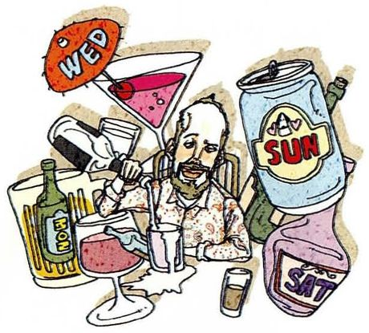
How often do you get to relax?
What you seeA man leaning back with a drink, entirely surrounded by giant cocktail glasses, wine bottles and cans — his relaxation has become a collection.
What it means你多久能放松一次。get to 暗示「有机会」，带一点不容易的意味。
Say it like this①Properly? A few times a month. ②I get evenings off most days, but that's not the same as relaxing. Really relaxing — no phone, no list in my head — maybe twice a month. ③The get to in your question is doing a lot of work. I have plenty of free time; what I don't have is the feeling that I'm allowed to spend it doing nothing. Even on a day off there's a background process running about what I should be doing. So I'd say I relax properly about once a month, usually somewhere I can't get a signal.
10
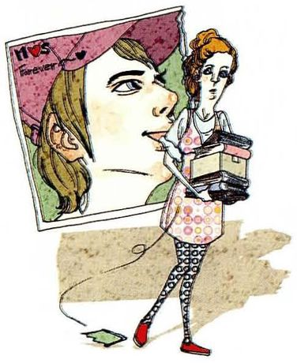
How often do you think about your first love?
What you seeA woman walking past a huge poster of a woman's face, glancing up at it, a magazine in her hand. Something she's seen before.
What it means你多久想起初恋一次。first love 指「初恋的对象」，不是「初恋这件事」。
Say it like this①Almost never, honestly. ②Rarely now — maybe when a song comes on, or when I'm back in my hometown. It's less about the person and more about that year. ③Less than people expect. What I've noticed is that I don't think about her, I think about being nineteen — the same memory with a different subject. So maybe twice a year, and always triggered by a place rather than by anything about her.
11
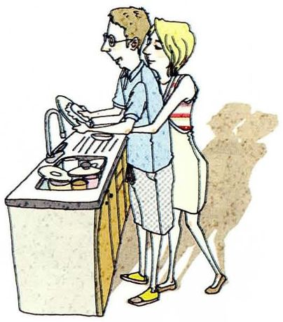
How often do you help with the chores around the house?
What you seeA man at a sink with his sleeves rolled up, washing up, while a woman stands close behind him leaning in. Doing it together.
What it means你多久帮忙做一次家务。chores 是复数名词，家务琐事。
Say it like this①Every day — I live alone, so there's nobody else. ②Daily, out of necessity. I do the washing up every evening and a proper clean once a week, usually Sunday morning. ③Every day now, but I'd note that "helping" implies it's someone else's job. I live alone, so there's no helping involved — and when I visit my parents I notice I still say "can I help?" about things that are half mine. My mother finds this funny and my father doesn't notice at all.
12
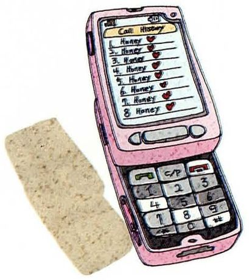
How often do you call your sweetheart?
What you seeA pink flip phone lying flat, its screen filled with a list of calls. A lot of them.
What it means你多久给对象打一次电话。预设有伴侣，没有就大方说明。
Say it like this①No sweetheart at the moment, so — never. ②I'm single, so I'll answer for a friend: she calls her partner twice a day and they've been together six years, which I find both sweet and slightly alarming. ③Not applicable — I'm single. But I'll say something about the number in the picture, because that call log is unwell. My own pattern is that I message constantly and call almost never, which I think is my generation's version of the same thing. We talk more often and say less.
13
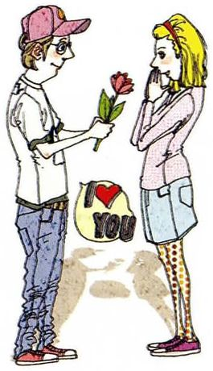
How often do you tell your sweetheart, "I love you"?
What you seeA young man in a cap holding out a single red rose to a woman, a red heart-shaped card floating between them.
What it means你多久跟对象说一次「我爱你」。这题在中英文化里回答方式差别很大 —— 值得说出来。
Say it like this①I'm single, so no comment. ②No partner right now. But I'd say it's a cultural difference worth mentioning — in Chinese we show it more than we say it, and saying it too often can feel like a performance. ③Single, so I'll answer the interesting part instead. I've noticed that in English "I love you" can be said weekly and it's warm; in Chinese the same sentence said weekly starts to sound ironic. My theory is that English has the word for the casual version and Chinese doesn't, so we use actions instead. Which means when a Chinese person does say it, it carries more weight — and it's genuinely hard to translate that difference to someone who learned it in English.
14
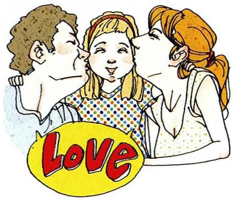
How often do people tell you, "I love you"?
What you seeA woman in the middle being kissed on both cheeks, a red Love badge in front of her. Affection from several directions.
What it means别人多久跟你说一次「我爱你」。注意主语变了：不是你说，是别人对你说。
Say it like this①From my mother, every time we speak. ②My mother says it at the end of every phone call. Beyond that, not often — my father has said it maybe twice in my life, and both times I remember exactly where I was. ③In words, rarely — my family aren't like that. But the frequency question is misleading, because they say it constantly in other ways: my mother asking whether I've eaten, my father sending me an article about something I mentioned once, six months ago. So: never in words, and every week in everything else.
15
How often do you see a movie?
What you seeTwo women sitting close together in a cinema, looking up at a lit screen. Full attention, no phones.
What it means你多久看一次电影。注意 see a movie（在影院看）和 watch a movie（在家看）的区别。
Say it like this①In a cinema, maybe once every two months. ②I watch things at home most weeks, but going to the cinema — maybe six times a year. I'd rather go for something that needs the big screen. ③I'll distinguish the two, because the numbers are completely different: at home, three or four films a month; at the cinema, about four a year. What changed it was realising that at home I'm also doing something else — I've never once watched a film at home without picking up my phone. So the cinema isn't about the film, it's the only place I still watch one thing at a time.
16
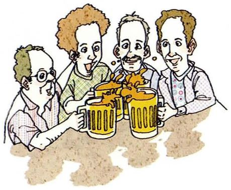
How often do you see your friends?
What you seeFour men leaning in around a table, each with a mug of beer, all talking at once. Whatever night this is, it happens regularly.
What it means你多久见一次朋友。注意 see 在这里是「见面」，不是「看见」。
Say it like this①A few times a week, luckily. ②Close friends, twice a week — we're in the same building most days. But the friends from home, maybe twice a year, which I don't like admitting. ③I'd split it: the people I see constantly and the people I actually miss. The first group I see three or four times a week and we never talk about anything real. The second group is about six people and I see them once a year at best. What's odd is that a two-hour dinner with the second group does more for me than a whole month of the first.
17
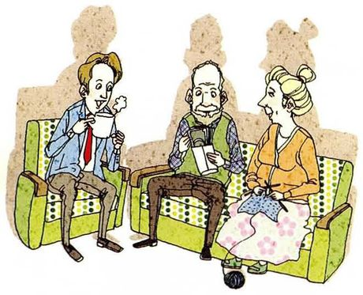
How often do you give money to your parents?
What you seeA young man in a tie leaning forward to hand something to an older couple seated on a green sofa. The direction of money has reversed.
What it means你多久给父母钱。这题预设你已经工作，还在读书就说明情况。
Say it like this①Not yet — they're still supporting me. ②I'm still a student, so it's the other direction at the moment: they send me money. I'd like to reverse that within a couple of years. ③Currently never, and it's a slightly uncomfortable question at twenty-five. They pay for things without being asked and would be offended if I offered. But I've started covering small things when I'm home — the shopping, a repair — and I notice my father lets me now, which he didn't two years ago. That feels like the actual answer: the amounts are zero, and the direction is quietly changing.
18
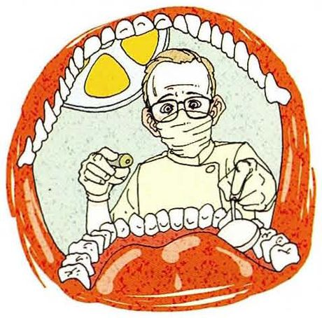
How often should someone see a dentist?
What you seeA dentist in a mask and glasses, seen from inside an open mouth, surrounded by enormous teeth. A view nobody wants.
What it means注意这题问的是 should —— 建议，不是你实际多久去一次。
Say it like this①Every six months is what they recommend. ②You're supposed to go every six months, though I think once a year is fine if nothing's wrong. The point is to catch things before they hurt. ③The official answer is every six months, and I'd separate that from what people actually do — which in my case is once every two years, usually after something starts aching. The reason the recommendation is that frequent isn't that your teeth fail in six months; it's that small problems are cheap and silent. By the time it hurts, you've usually bought yourself something expensive.
19
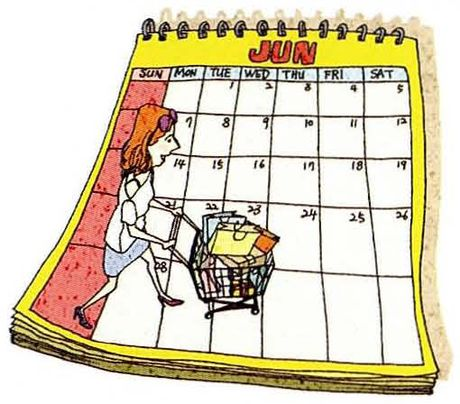
How often do you go shopping?
What you seeAn open wall calendar with dates marked in red, and a tiny figure pushing a shopping trolley across the grid. Shopping, scheduled.
What it means你多久去购物一次。go shopping 可以是买日用品，也可以是买衣服 —— 最好说清楚哪一种。
Say it like this①For food, twice a week. ②Groceries twice a week at the market near campus. For anything else — clothes, household things — once a month at most, and usually online. ③Food, twice a week, and I've come to enjoy it — the market on Saturday morning is the closest thing I have to a ritual. Clothes, almost never in person; I gave up on fitting rooms about three years ago. So I'd say my shopping is either very frequent and very local, or not shopping at all.
20
How often do you travel abroad?
What you seeA woman in sunglasses with a wheeled suitcase, striding past the Sphinx, the Great Wall gate, Big Ben and the Leaning Tower, all crammed into one street.
What it means你多久出国旅行一次。注意 travel abroad —— abroad 是副词，前面不加 to。
Say it like this①About once a year, if that. ②Once a year at most. The last few years it's been zero, because of the visa paperwork and because a PhD doesn't leave much room for it. ③Honestly, once in my life — one conference, and I barely left the hotel. It's not that I don't want to; it's that the two things I'd need, money and unbroken time, are exactly the two things a PhD removes. I've stopped saying "after I graduate" because I've heard what happens to that promise.
05重点词汇（美式音标）
课首页脚注给了 5 个词，其中 dilemma 和 at best 是议论时最有用的两个。
A · 课本脚注的 5 个词
词
音标
课上怎么用
中文
dilemma
/dɪˈlemə/
So I have a dilemma. 两难。注意拼写：两个 m，不是 dilemna
两难处境
alternate
/ˈɔːltərneɪt/
alternate visits between both families 动词重音在 AL；形容词 /ˈɔːltərnət/ 同拼写
轮流
at best
/æt best/
Once a month at best. 充其量。把悲观说得客观
充其量
stay up
/steɪ ʌp/
stay up all night 熬夜。反义 go to bed early
熬夜
nap
/næp/
take a nap 小睡。注意搭配 take，不用 do
打盹
B · 频率与次数
表达
音标
课上怎么用
中文
every other day
/ˈevri ˈʌðər deɪ/
I exercise every other day. 隔天一次。名词用单数
每隔一天
now and then
/naʊ ən ðen/
I see him now and then. 偶尔。比 sometimes 更口语
偶尔
once in a while
/wʌns ɪn ə waɪl/
Only once in a while.
偶尔
hardly ever
/ˈhɑːrdli ˈevər/
I hardly ever watch TV. 几乎不。本身就是否定，不加 don't
几乎从不
nine times out of ten
/naɪn taɪmz aʊt əv ten/
Nine times out of ten I walk. 十次有九次。比 almost always 生动
十有八九
go on my own
/ɡoʊ ɑːn maɪ oʊn/
I go on my own when I can. 独自去。比 go alone 更自然
自己去
C · 频率背后常用的动词块
表达
音标
用法
中文
keep meaning to
/kiːp ˈmiːnɪŋ tuː/
I keep meaning to do more. 一直打算（但没做）
一直想
put it off
/pʊt ɪt ɔːf/
I put it off for ages. 一再拖延
拖延
skip
/skɪp/
I sometimes skip the evening one. 跳过、省掉
跳过
I'd say
/aɪd seɪ/
Two or three times a week, I'd say. 估计时说
我大概是说
at most
/æt moʊst/
Once a month at most. 最多
至多
be supposed to
/bi səˈpoʊzd tuː/
You're supposed to go every six months. 按理应该
按理应该
reverse
/rɪˈvɜːrs/
I'd like to reverse that. 反过来
反转
06老师大概率会问的问题
频率题的追问一定是「跟以前比」或者「想不想改」。提前想好这两个方向，就不会被问住。
Which of these would you like to do more often?
Seeing friends from home, and travelling. Both suffer from the same problem: they need whole days rather than hours. I can find twenty minutes for exercise and I do; what I can't find is a free weekend, because every weekend has something in it that felt urgent when I agreed to it.
they need whole days rather than hours —— 把「没时间」这个借口变成了一个具体结构性原因，说服力完全不同。最后那句也是真实的生活观察。
Has anything changed in your daily routine in the last year?
Two things, and both are unglamorous. I started walking to the lab instead of taking the bus, which added about four thousand steps and removed the excuse that I don't have time to exercise. And I stopped having coffee after three in the afternoon, which fixed my sleep more than anything else I've tried. Neither of them feels like a habit; they just stopped being decisions.
最后一句 they just stopped being decisions 是对「习惯养成」很精准的描述，比说 it became a habit 更有内容。
How often is "often"?
That's the problem with the word — it's completely relative. "I often go to the cinema" could mean weekly or twice a year, depending on who's saying it. This is why I've been giving you numbers: twice a week is a fact, often is an impression. If someone tells me they often cook, I still don't know whether they eat out five nights a week.
这是本课最核心的一个洞察，用一个反问把它讲清楚，本身就是漂亮的回答。twice a week is a fact, often is an impression 值得背下来。
Do you think people are honest about how often they do things?
No, and the direction of the dishonesty is interesting. People overstate exercise and reading, and understate drinking and screen time. I've done it in this lesson — I said twice a week for exercise and immediately qualified it, which is the honest version of a lie. The pattern is that we report the number we'd like to be true.
主动承认自己刚才就在作弊（I've done it in this lesson），是极强的可信度信号。老师会立刻记住这个回答。
Is there a frequency in this list you think is unhealthy?
Staying up all night, if it's regular — but not for the reason people give. The damage isn't the one bad night, it's that it usually means the whole week was badly planned. And I'd add the one that isn't on the list: checking your phone. Everyone I know does it more often than they'd say out loud, and it's the only item here that happens a hundred times a day.
If you had to change one of these habits, which would it be?
The phone one, and I'd be suspicious of anyone who picked something else. All the other items are choices I make a few times a day at most; that one happens before I'm fully awake. Changing a decision you don't remember making is much harder than changing a decision you do, which is why every other habit here feels achievable and this one doesn't.
✗I never go to the cinema sometimes. ✓I hardly ever go to the cinema. / I never go to the cinema.
never 和 sometimes 不能同时出现，一个是 0% 一个是 40%。一句话里只能有一个频率词。
✗How often do you go to abroad? ✓How often do you travel abroad? / How often do you go abroad?
abroad 是副词，前面不加 to。同理：go home、go downtown 也都不加 to。
✗How often should someone see a dentist? — I see a dentist once a year. ✓You should go every six months. Personally I go about once a year.
问的是 should（建议），只答自己的习惯等于没回答。先说建议，再说自己，两句都要有。
08五十分钟怎么用
这一课的内容都很日常，所以重点不是背句子，而是把答案数字化。
课前 10 分钟：把第 02 节的频率阶梯看一遍重点记 every other day 和 twice a week 这两类具体表达 —— 它们是让回答变可信的关键。